はじめまして。
リベ大デンタルクリニック武蔵小杉院のホームページをご覧いただき、ありがとうございます。
「歯科医院が苦手」「久しぶりで不安」「何をされるのかわからない」
そんなお気持ちの方にも、安心して「健やかな歯を守る」一歩を踏み出していただける場所でありたいと思っています。
お困りのことや不安なことがあれば、歯科医師やスタッフにお気軽にご相談ください。
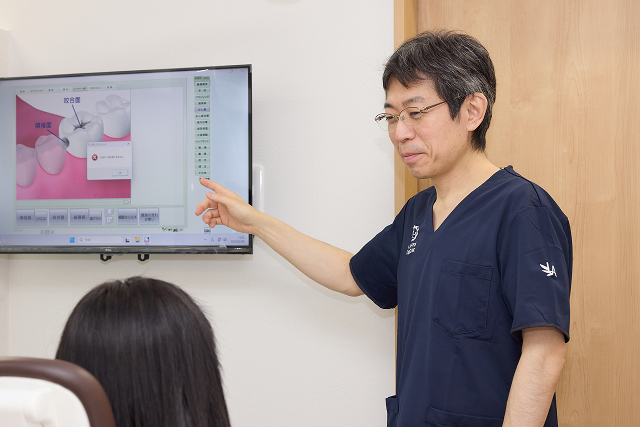
しっかり説明し、ご納得いただいてから進めます
「知らないうちに歯を削られていた」
そんなご経験のある方にこそ、安心していただけるように。
当院では、治療内容・費用・選択肢をできるだけわかりやすくご説明します。
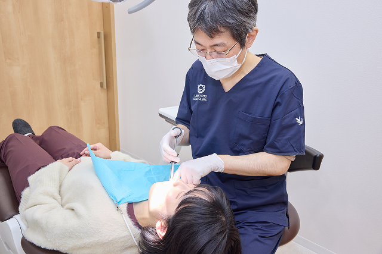
痛みの少ない、やさしい治療を心がけています
表面麻酔や電動麻酔を使い、できる限り痛みを感じにくいよう工夫しています。
必要に応じて、歯科麻酔医による静脈内鎮静法も対応できます。
不安な方は、遠慮なくお声がけください。
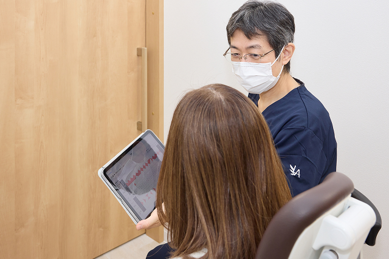
無理な自費治療のおすすめはしません
保険診療・自費診療のどちらもメリット・デメリットを丁寧に説明し、
患者さんご自身が選べる形を大切にしています。
初診の流れ
受付
スマートフォンで簡単に受付ができます。（事前のネット予約をお願いします）
受付方法がわからない方も、スタッフがやさしくサポートしますのでご安心ください。
カウンセリング
事前にご記入いただいた問診内容をもとに、「どんなときに痛むか」「治療の希望」など、じっくりお話を伺います。
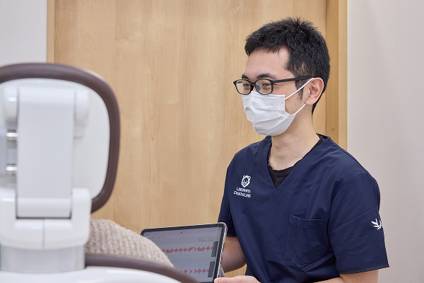
検査（デジタルレントゲン・歯科用CT・口腔内カメラ）
お口の状態をしっかり把握し、今後の治療の方針を一緒に考えていきます。
なお、出血や腫れ、痛みなど、緊急の症状がある場合は、必要最低限の検査の後、治療や応急処置を優先いたします。
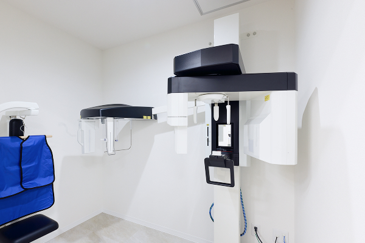
治療計画の説明
お口の中の状態や検査結果は、大型モニターに映しながら、イラストや資料を使って丁寧にご説明いたします。
現在の状況をふまえて、必要と思われる治療の進め方や期間、費用の目安、メリット・デメリットまで、できるだけわかりやすくお伝えします。
ご不明な点や気になることがあれば、どんなことでも遠慮なくご相談ください。
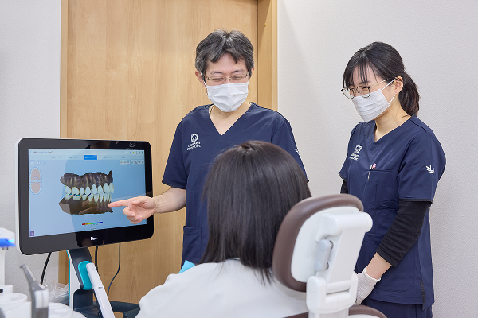
治療
治療内容についてご納得いただけましたら、治療を進めていきます。
治療の途中でも、気になることや不安な点があれば、どうぞ遠慮なくお声かけください。
患者さんの安心を大切にしながら、一つひとつ丁寧に対応いたします。
メンテナンス・定期検診
むし歯や歯周病は、再発しやすいもの。治療が終わった後も、良い状態を保つために定期的なメンテナンスをおすすめしています。
当院では、1回の来院につき1時間の診療枠を確保し、説明・治療・歯石除去までをまとめて行います。治療と予防を並行して進めることで、健康なお口の環境をしっかり守っていきます。
患者さんの状況やご希望に応じて、柔軟に対応しています。
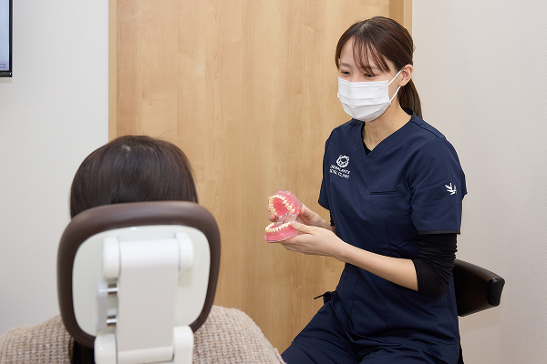
お会計
診療当日の受付時にご案内するアプリにクレジットカードを登録していただくと、診療後のお会計を待たずに、すぐお帰りいただけます（事後決済）。
アプリの操作が難しい場合も、各種キャッシュレス決済に対応していますのでご安心ください。
痛みが苦手な方へ
当院の「やさしい治療」の取り組み
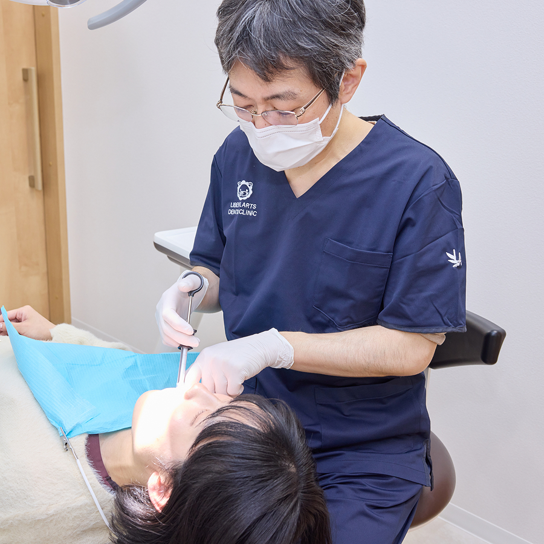
表面麻酔を使用して
針の痛みを軽減
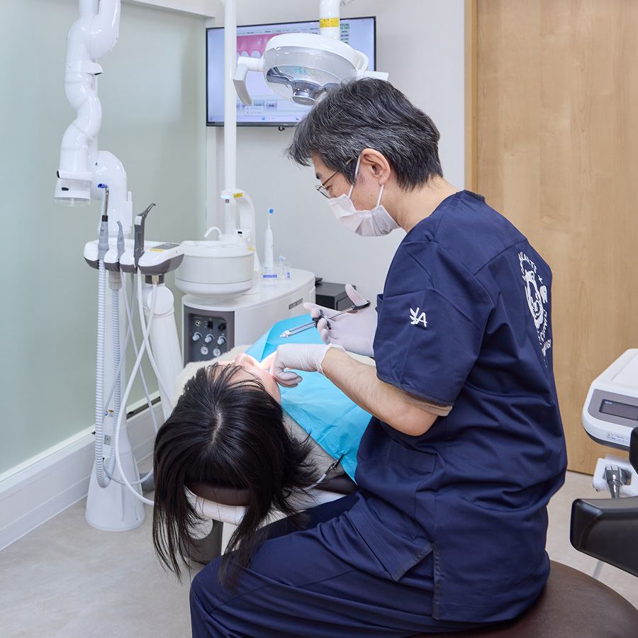
電動麻酔器で
ゆっくり麻酔注入
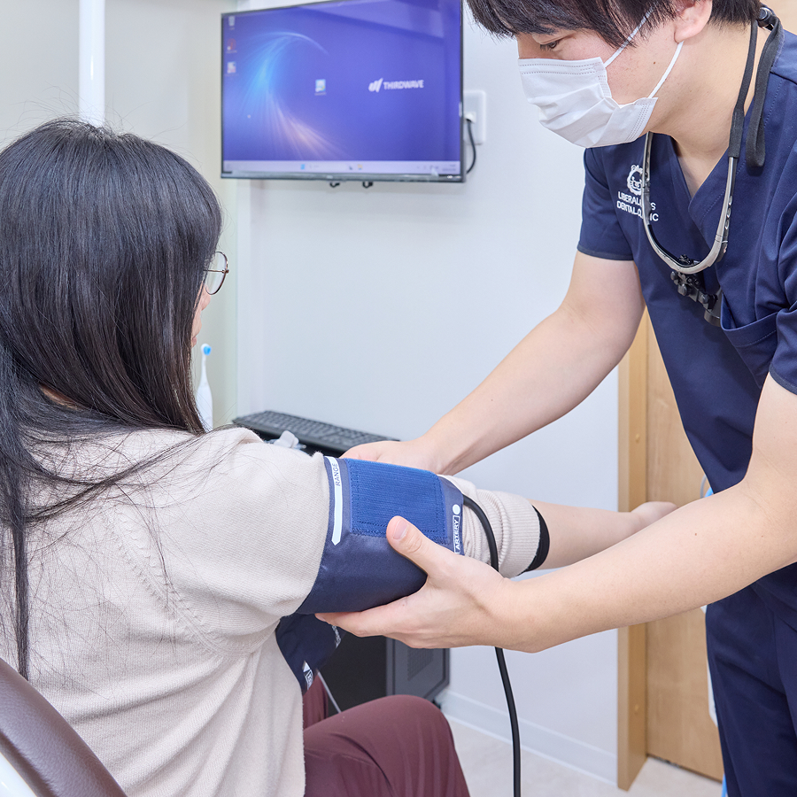
ご希望の方には
静脈内鎮静法※1も対応
「歯医者が苦手」という方が安心して通える体制を整えています。
不安が強い方には、事前にしっかりと説明をし、無理に治療を勧めることはありませんのでご安心ください。
初診時にかかる費用の目安
保険診療（3割負担）で、大体3,000〜5,000円が目安です。
※ 検査内容によって前後する場合があります。
※ 応急処置を行った場合は少し増えることがあります。
※ 川崎市内にお住まいの0歳〜中学3年生のお子さまは小児医療費助成事業の対象です。
初診時にご持参いただくもの
マイナ保険証または資格証明書
お薬手帳（お持ちの方）
使用中のマウスピースや詰め
（お持ちの方）
現在服用しているお薬のメモなど
当院の感染対策
安心して通っていただける歯科医院であるために。
当院では、「自分の家族にも安心して受けてもらえる治療」を基準に、設備の選定や感染対策を行っています。
ここでは、当院の感染対策設備についてご紹介します。
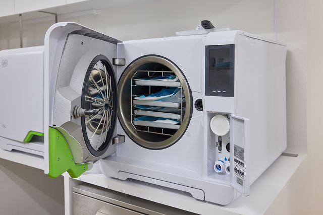
ヨーロッパの厳しい基準を満たした滅菌システム
治療に使用する器具は、すべて高水準のクラスB滅菌器である「LISA（リサ）」を用いて滅菌処理を行っています。この滅菌器は、ヨーロッパの厳しい滅菌基準（EN13060）をクリアしており、内部が複雑な器具や細い管の内部までしっかりと滅菌できるのが特長です。
すべての患者さんに、より清潔で安心できる環境で治療を受けていただけるよう、衛生管理にも力を入れています。
汚れを手洗いより確実に落とす医療用洗浄機
当院では、医療用洗浄機「ミーレ ジェットウォッシャー」を導入しています。
手洗いでは落としきれない汚れを93℃の高温で自動洗浄・消毒・乾燥まで行い、常に清潔な器具を使用できる環境を整えています。
感染リスクの軽減にもつながる、国際基準に準拠した高水準の衛生管理です。
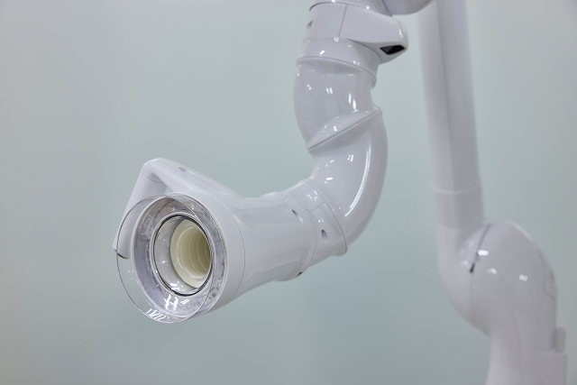
治療中に出る粉じんを吸い込む口腔外バキューム
治療中には目に見えない水しぶきや粉じんが空気中に広がることがあります。
当院では、すべての診療ユニットに口腔外バキュームを設置。
空気中の微細な汚れをしっかり吸引し、院内の空気を清潔に保つことで、感染リスクを最小限に抑えています。